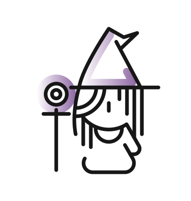
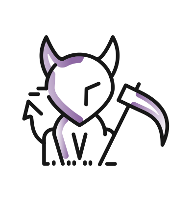

"Web accessibility is not designing compatible, and accessible Web sites are not modern, they are simple and ugly."

The power of the Web is in its universality. Access by
everyone regardless of disability is an essential aspect.
We have been working on the development of this project for a year, financing it with our own funds and with entrepreneurship helping programs of the Basque Government.
Much of the work has already been done, but we need to continue advancing in the development of the platform as well as in the creation of its contents and its introduction to the market.
Only the 2.2% of Web pages comply with the old WCAG 2.0 Web accessibility standard.
(source: WebAIM)
"Web accessibility is not designing compatible, and accessible Web sites are not modern, they are simple and ugly."
"Web accessibility has no market."
"Creating accessible Web sites is very expensive and there are not enough qualified Web accessibility professionals."
In an effort to spread the importancy of Web accessibility we have developed three a11y utilities. We want to change the perspective that most people have about this matter so it is no longer treated as something expensive, unuseful or difficult. The time is now. All our creations are open-source and free to use, you can find them on GitHub.
A front-end library for the modern Web. Create accessible, responsive Web User Interfaces with lightweight HTML following the WCAG 2.1 standarts. Guarantee access to Web content for all the people around the world without deep knowledge in Web accessibility.